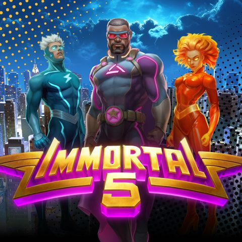

Immortal 5 - RTP, análise e onde jogar

| Provedor | Relax Gaming |
|---|---|
| Tipo de jogo | Caça-níqueis de vídeo |
| Tema | guerreiros imortais |
| RTP | Varia conforme o cassino (ver perguntas frequentes) |
| Celular | Sim |
Resumo
Ambientado em guerreiros imortais, Immortal 5 é a visão da Relax Gaming sobre o tema em formato de caça-níqueis. Os rolos, símbolos e apresentação do bônus estão ligados ao tema.
A parte técnica é a habitual da Relax Gaming: jogo instantâneo no navegador, suporte total a celular e regras disponíveis dentro do cliente. Números concretos como RTP e ganho máximo dependem da configuração escolhida pelo cassino.
Immortal 5 está no catálogo de jogos próprios do provedor ao lado de sucessos como a série Money Train. Consulte nossas listas para encontrar cassinos revisados na sua região.
Onde jogar Immortal 5
Immortal 5 está disponível em cassinos online com jogos da Relax Gaming. Comece com nossas listas revisadas:
Nigeria | Brazil | Mexico | Kenya | South Africa | Colombia | India
Immortal 5 - Perguntas frequentes
Qual é o RTP do Immortal 5?
A Relax Gaming lança Immortal 5 com várias configurações de RTP, e cada cassino escolhe uma. O número exato pode variar entre cassinos. Para conferir, abra as informações do jogo ou a tabela de pagamentos dentro do jogo no cassino onde você jogar.
Posso jogar Immortal 5 grátis?
Muitos cassinos online permitem testar Immortal 5 no modo demo sem depositar. Escolha um cassino das nossas listas e procure a opção demo ou de jogo grátis se quiser testar o jogo primeiro.
Onde posso jogar Immortal 5 com dinheiro real?
Immortal 5 está disponível em cassinos com jogos da Relax Gaming. Nossas listas cobrem Nigéria, Brasil, México, Quênia, África do Sul, Colômbia e Índia, e incluem apenas operadoras que avaliamos.
Immortal 5 funciona no celular?
Sim. Como todos os lançamentos da Relax Gaming, Immortal 5 roda no navegador de celulares e tablets, sem necessidade de download.